寻找模板
接上篇，之前已经把博客搭建好了，但是默认的肯定过于单调了些，需要我们进行完善。完善的第一步当然是需要去hexo官方主题找一个中意的模板。里面有很多的主题，点击某个主题之后能进行预览效果。选主题好看是一个方面，另一个是最好有文档教程可以学习配置。不然拿来一个主题，也不能做得酷炫。在预览主题界面一般会有一个GitHub的连接，点击之后会跳转到存放该主题的仓库，里面一般都会有主题的使用教程。我选的是Next主题，Next主题相对来说比较简洁方便，主要是配置教程文档比较详细，在网上也能找到很多相关教程。
先来看看GitHub上大佬的示例，然后再确定我们自己的博客应该如何搭配。
Miaia，有Next最近使用教程。
uchuhimo
Acris
Dandy
以上几个博客，也说明了Next还提供了不同的布局模板，也就是说，我们选了Next之后，还可以再进行选择。
下载主题
为了能使用该主题，我们先在存放博客文件的目录下进行Git Bash，将Next下载到本地。
1 | git clone https://github.com/iissnan/hexo-theme-next themes/next |
我们可以看到在themes文件夹下多了一个Next文件夹，这个就是我们下载的主题。下载过来先不急，Hexo和Next为了让用户专注写博客，减小对代码的关注，大多都使用配置进行设置Next主题。所以我们先来了解两个配置文件。
配置站点
站点配置文件：位于博客根目录下的 _config.yml，对整个站点的基本内容进行更改。如标题、作者等等。
主题配置文件：位于themes\next下的_config.yml，对当前主题的相关设置。如图标、布局等等。
因为它们的文件名是一样的，所以用站点文件和主题文件来区分它们。
首先是站点文件配置：hexo官方文档介绍得非常详细，我们就对主要的几个进行简单介绍和配置。
# Site 下面:
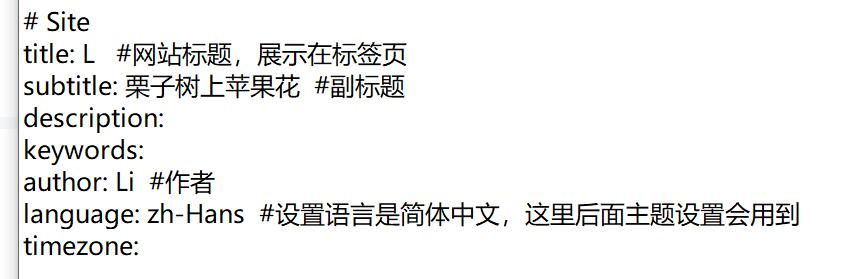
然后继续,或者直接搜索 ‘theme’ ，把字段改成next，表示使用next主题，如果是使用的其他主题的话，就改成其他主题名字：
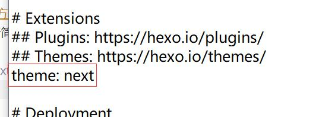
修改之后，重新生成页面和启动服务，默认样式如下：
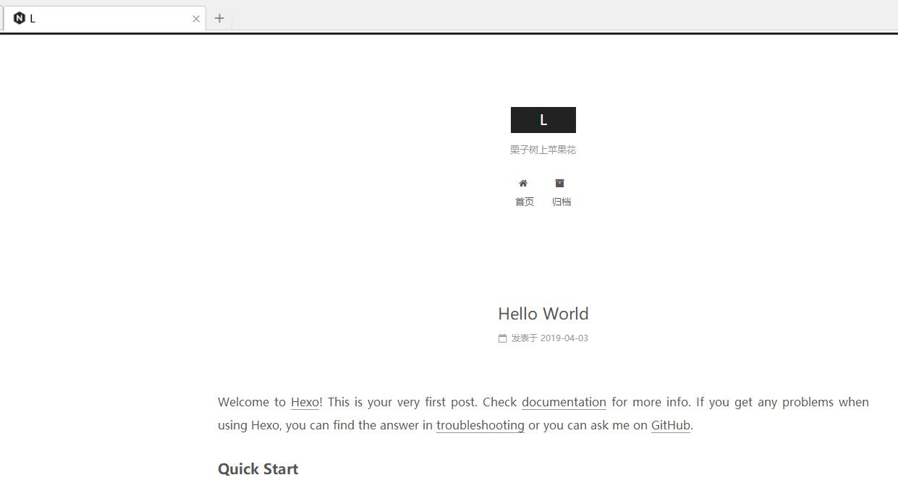
可以看到我们修改的已经生效了，标题和副标题。如果中文显示乱码的话，记事本打开_config.yml，文件 -> 另存为 -> 选择编码 UTF-8 -> 确定（默认是相同目录，替换就ok）
配置主题
站点先暂时配置到这，其他的后面有需要再配置。下面进行主题配置。打开\themes\next下的_config.yml文件。其实如果英语比较好的话，里面注释都讲的比较详细了，一直往下设置就ok。不过英语不好的我，只能参考Next文档进行配置。
首先配置整个网站的主题布局等等，就按照Next使用文档的配置顺序来配置一下。
选择主题[Scheme]
这个主题是Next的外观，我们可以在主题文件里面搜索 “scheme:”来找到设置位置：
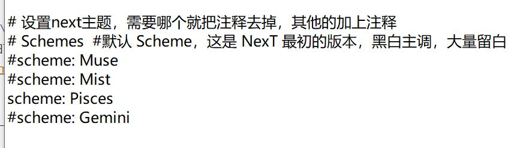
这个配置还有一个好处就是：支持动态设定，也就是修改了配置之后不需要重新生成静态文件，开启服务。在之前预览的页面直接刷新就可以了。刷新以后主题外观就改变了。
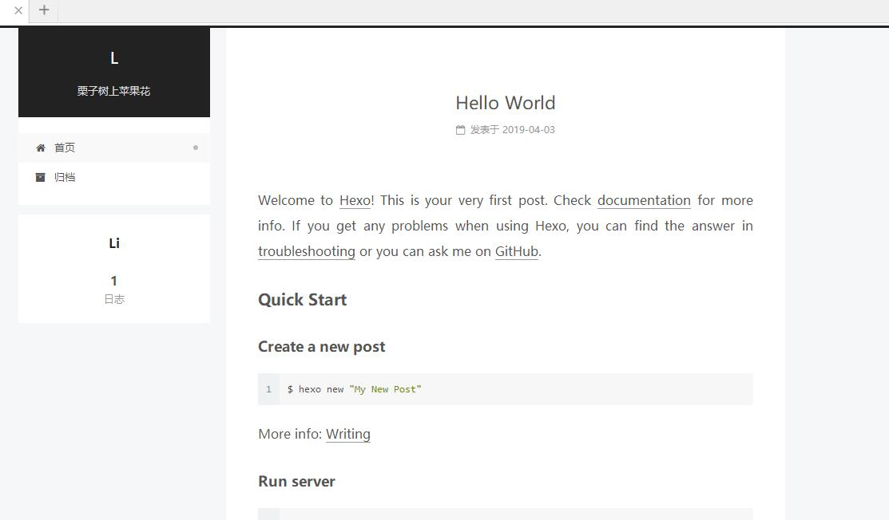
设置菜单
所谓菜单就提供一个按钮，点击之后跳转到不同的地方。菜单设置就刚刚外观设置的上面一个，找不到可以进行搜索”menu“，找到相关字段：
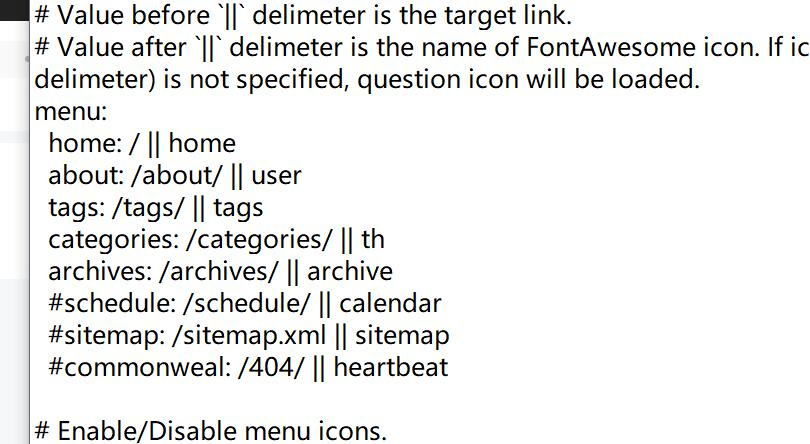
Next默认是只有home 和 archives。其他的菜单都被注释了，我们就把需要展示的菜单注释去掉，然后保存并刷新我们的预览页面。就可以看到以下效果了：
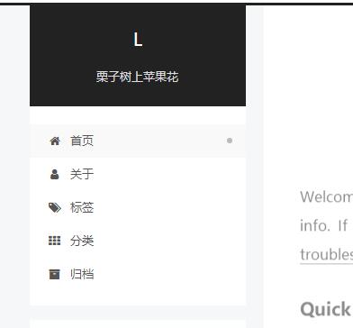
在这里值得我们注意的是，菜单的设置格式 ，如：” tags: /tags/ || tags “ ； 好在配置文件里面也提供了注释，大致就是说，”名称:链接 || 图标“ 。所谓的名称并不会直接展示在网页上，而是会去\next\languages目录下，找到刚刚站点设置的语言文件，在里面进行查找匹配。所以我们在配置文件中写的是英文，但是我们网页展示的却是汉子。如果改成其他语言，自然也会替换成其他语言的文字展示。然后 || 之后的图标，Next会自动到FontAwesome上进行匹配。有兴趣的可以查看自己博客网页的源代码，图标就是使用的fa fa-*格式。
在菜单这里还有一点就是，目前我们只能看这个菜单，如果点击的话，会出现404错误 或者是 Cannot GET /*/，这是因为我们本地没有相关的页面提供给它。
那我们就需要新建页面提供给主题进行访问。回到存放博客的根目录下，进行git bash（以标签为例）：
1 | hexo new page tags |
之后我们会发现在博客根路径的source文件夹里面多了一个tags文件夹，我们继续打开就能发现一个index.md文件 ，然后需要编辑这个md文件，来让Next来识别它。
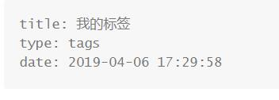
我们需要添加一个type字段，添加tags (这个是对应了之前menu设置名称，点击tags菜单就能跳到这个页面)。然后我们重新生成，启动预览就可以点击菜单并且进去了。
其他菜单同理。
设置侧边栏
所谓侧边栏也就是我们展示我们刚刚菜单的那一栏，在配置文件中搜索Sidebar Settings，就可以看到相关设置。侧边栏可以展示的东西还挺多的，这里我们按照配置文件从上到下进行设置：
1.社交链接（Social Links），用于展示其他的社交平。我们先把social的注释去掉，然后把需要展示的选项注释也去掉，在这里的设定格式和之前菜单是一样的，然后我们也可以添加自定义的社交连接。
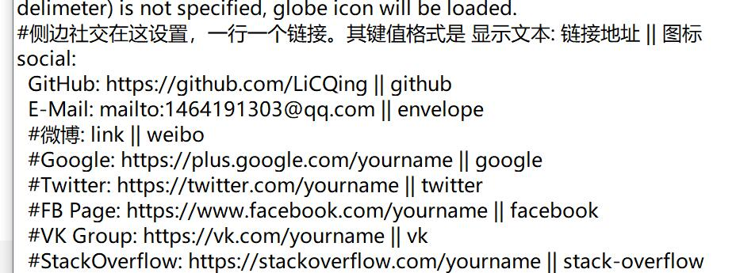
后面也有关于图标的设置，如果上面设置了图标，下面就不用添加了。设置一下是否显示图标和仅显示图标就ok。
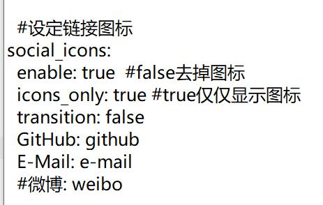
效果显示：
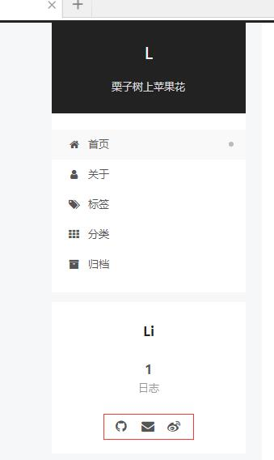
2.友情连接（Blog rolls），这个功能就不多介绍了，主要看怎么配置吧。
效果如下：
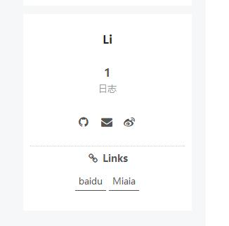
3.设置头像（Sidebar Avatar）
设置头像有三种方式：
- 将头像放置主题目录下的 source/uploads/ （新建 uploads 目录若不存在）配置为：avatar: /uploads/文件名
- 或者 放置在 source/images/ 目录，配置为：avatar: /images/文件名
- 还有就是直接使用网络连接，配置为：avatar: http://example.com/avatar.png
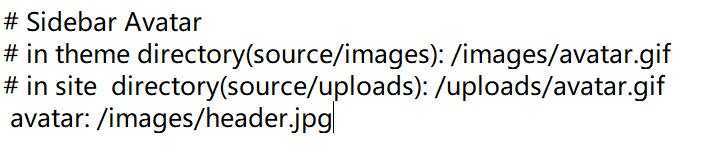
4.其他
还有几个设定不是非常重要，但是也可以设置一下，不然就用默认的都可以。
- 设置文章内目录
1 | toc: |
- 设置侧边栏展示在哪边
1 | position: left |
- 侧边栏何时展示
1 | #display: post #默认，存在目录列表显示 |
- 添加一个内容已经查看的百分比，这个挺有意思的
1 | scrollpercent: true |
第三方服务
- 网站访问统计，我们采用不蒜子提供的服务。进入不蒜子网页，有手动设置方式。不过现在Next配置文件，已经集成了。手动配置可以更加个性化一点。配置文件就比较方便。直接在配置文件中搜索
busuanzi_count，将下面的enable改成true就可以了。
1 | enable: true |
- 文章阅读统计，在文件中搜索
leancloud_visitors，使用LeanCloud帮助我们统计。先进入LeanCloud进行注册验证，然后新建应用，获取key 和id。随后将其填入我们的配置文件。
1 | leancloud_visitors: |
更多功能
我的博客暂时配置到这里就差不多了（主要是东西挺多的，有点麻烦）。有需要更多炫酷功能可以进行百度查找，其他相关设置。
如
https://www.jianshu.com/p/f054333ac9e6
https://www.jianshu.com/p/3a05351a37dc
新建博文
前面的工作做了那么多，当然不仅仅是就搭建一个网站算了，书写博客才是我们的最终目的。
在博客根目录下git bash ：
1 | hexo new title # title 文章标题 |
然后会提示:
Created: D:\CODE\bolg2\source_posts\title.md
那就说明已经新建了一个新文章，然后照着这个目录找到刚刚新建的文件，打开之后会发现只有这一部分。官方文档称之为Front-matter，用于指定个别文件的变量。
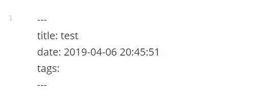
在这一部分，预先定义的内容有
- layout 布局
- title 标题
- date 建立日期
- updated 更新日期
- comments 开启文章的评论功能 true/false
- tags 标签
- categories 分类
- permalink 覆盖网站网址
一般就设定标题、标签、分类、时间就可以了，标题和时间hexo会自动帮我们加上，所以我们就手动添加标签和分类上去。
1 | --- |
这里需要注意的是标签和分类的写法。然后还有分类只支持单分类，也就是说，如果你在分类下面写上两个，会用最后的一份分类指定给文章。不过分类虽然不支持平级，但是可以有从属，也就是父子级分类，使用,分割分类的层次关系。
高级编辑
Hexo的博文使用MarkDown语法，多少会受到限制。为了弥补标签的不足，Hexo提供了标签插件来支持博文的多样化。
大致分为以下几类
- 引用块，在文章中插入引言，可包含作者、来源和标题。语法如下：
1 | {% blockquote [作者, 来源] [链接] [链接标题] %} |
[]中的为可选项，如引用歌词：
1 | {% blockquote [陈宏宇, 早春的树] %} |
臂弯做衣架
摇晃在庭前
腰杆做长椅
你轻靠,或躺下看书
- 代码块，相对使用反引号而言更加具体描述的引用。
1 | {% codeblock [title] [lang:language] [url] [link text] %} |
如：
1 | {% codeblock [Thread] [lang:Java] [http://tool.oschina.net/apidocs/apidoc?api=jdk-zh] [java jdk] %} |
1 | PrimeThread p = new PrimeThread(143); |
- 引用外部资源（图片、视频）
图片：
1 | {% img [class names] /path/to/image [width] [height] [title text [alt text]] %} |
视频：
1 | {% youtube video_id %} #插入youtube视频 |
资源文件（添加本地图片）
统一管理
适合只有少量图片或者需要重复使用的图片。放在主题source/images 文件夹中，通过的方法来访问他们。
分散管理
适用于每篇博文使用的不同的图片，更加组织化的方式来管理资源。可以非常方便的管理每篇博文的资源。
- 首先修改站点配置文件，找到
post_asset_folder，设置为true
1 | post_asset_folder: true |
当资源文件管理功能打开后，Hexo将会在你每一次通过 hexo new
相对路径引用的标签插件
通过常规的 markdown 语法和相对路径来引用图片和其它资源可能会导致它们在存档页或者主页上显示不正确。在Hexo 2时代，社区创建了很多插件来解决这个问题。但是，随着Hexo 3 的发布，许多新的标签插件被加入到了核心代码中。这使得你可以更简单地在文章中引用你的资源。
1 | {% asset_path slug %} |
比如说：当你打开文章资源文件夹功能后，你把一个 example.jpg 图片放在了你的资源文件夹中，如果通过使用相对路径的常规 markdown 语法 ，它将不会出现在首页上。（但是它会在文章中按你期待的方式工作）
正确的引用图片方式是使用下列的标签插件而不是 markdown ：
通过这种方式，图片将会同时出现在文章和主页以及归档页中。